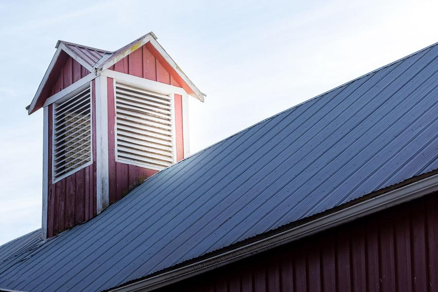
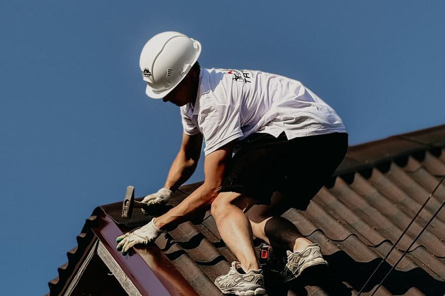
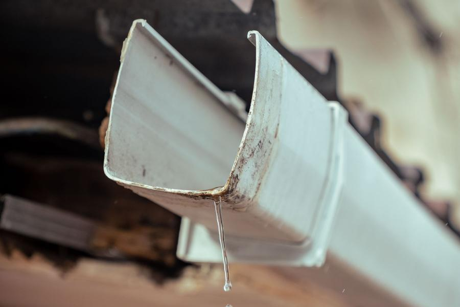
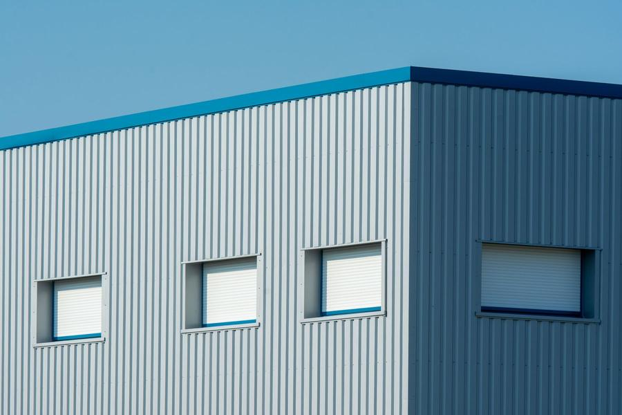
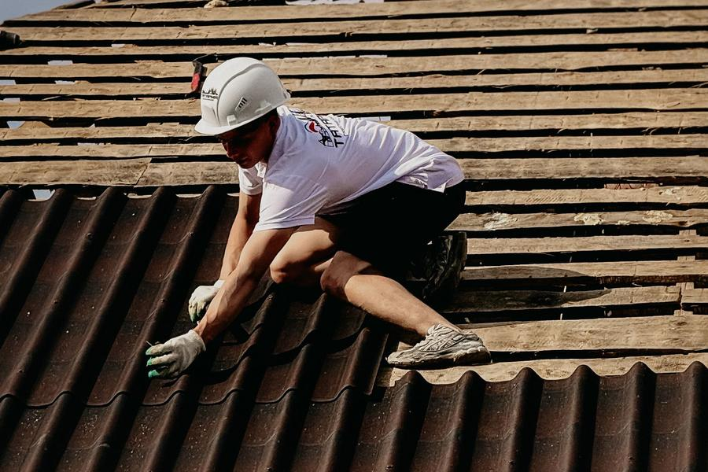
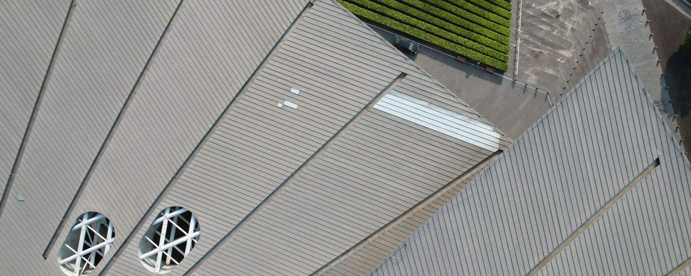
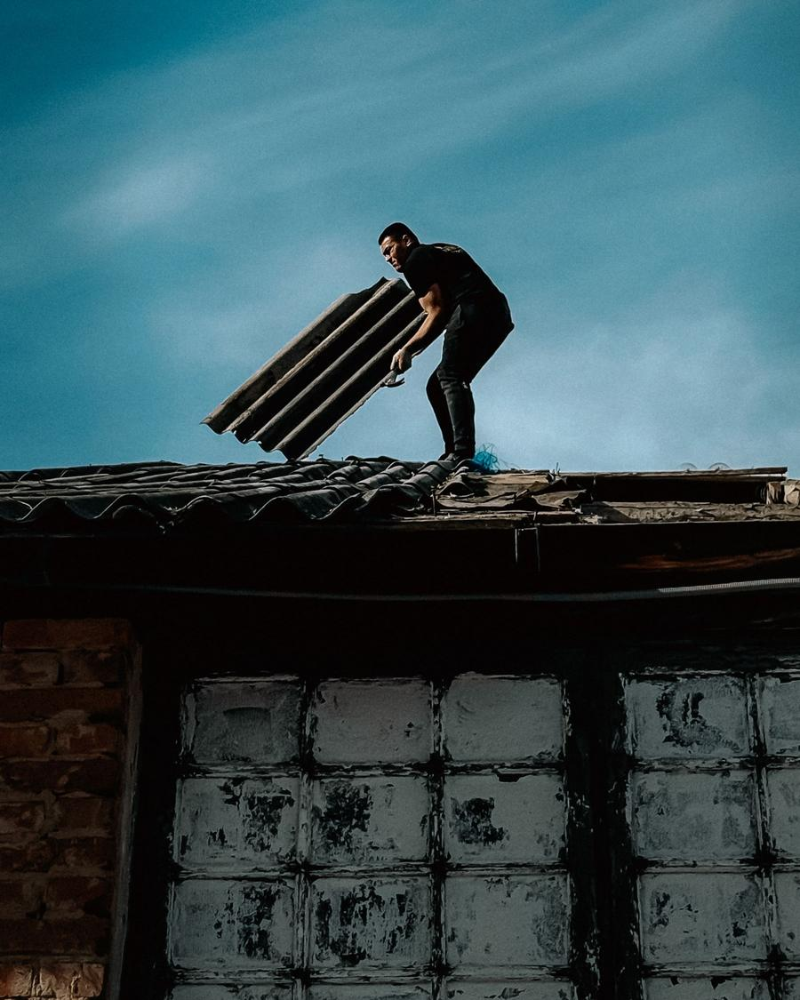

Ką darome
Patys gaminame skardos gaminius, prekiaujame jais ir stogų dangomis, todėl medžiagas ir darbą gaunate iš vienų rankų.
-
Stogų dengimas
Nauji šlaitiniai ir plokštieji stogai, senų stogų keitimas gyvenamiesiems namams, ūkiniams pastatams, garažams.

-
Skardinimo darbai
Kraigai, vėjalentės, karnizai, sąlajos ir kitos vietos, kur stogas turi būti sandarus.

-
Skardos lankstiniai
Palangės, parapetai, nulajos. Išlankstome pagal jūsų matmenis arba pamatuojame patys.
Lankstinys pagal jūsų matmenisPavyzdinis brėžinys, matmenys mm -
Lietaus nuvedimo sistemos
Latakai ir lietvamzdžiai: montavimas, keitimas, remontas.

-
SANDWICH plokščių montavimas
Daugiasluoksnės plokštės sandėlių, gamybinių ir ūkinių pastatų sienoms bei stogams.

-
Stogo remontas ir dažymas
Randame, kur prateka, ir sutvarkome tą vietą, o ne visą stogą.


Kur dirbame
Plungė, Telšiai, Mažeikiai, Skuodas ir visa Žemaitija
Kaip dirbame
-
Parašote arba paskambinate
Trumpai papasakojate, koks pastatas ir ką reikia padaryti. Nuotrauka labai padeda.
-
Atvažiuojame pamatuoti
Apžiūrime stogą vietoje ir išmatuojame tai, ko iš nuotraukos nesimato.
-
Pateikiame sąmatą
Matote medžiagas, darbus ir terminą prieš ką nors užsakydami.
-
Lankstome ir montuojame
Pagaminame lankstinius, atvežame ir sumontuojame sutartu laiku.

Parašykite, ką reikia padaryti
Užtenka kelių sakinių: kur pastatas, koks stogas, kas negerai arba ką norite pasistatyti. Atsakysime ir sutarsime dėl apžiūros.
- El. paštas
- mbbliekorius@gmail.com
- Telefonas
- +370 613 11174
- Kur dirbame
- Plungė, Telšiai, Mažeikiai, Skuodas, visa Žemaitija
- Adresas
- Pramonės pr. 4I, LT-90112 Plungė
- Darbo laikas
- I-V 8.00-17.00